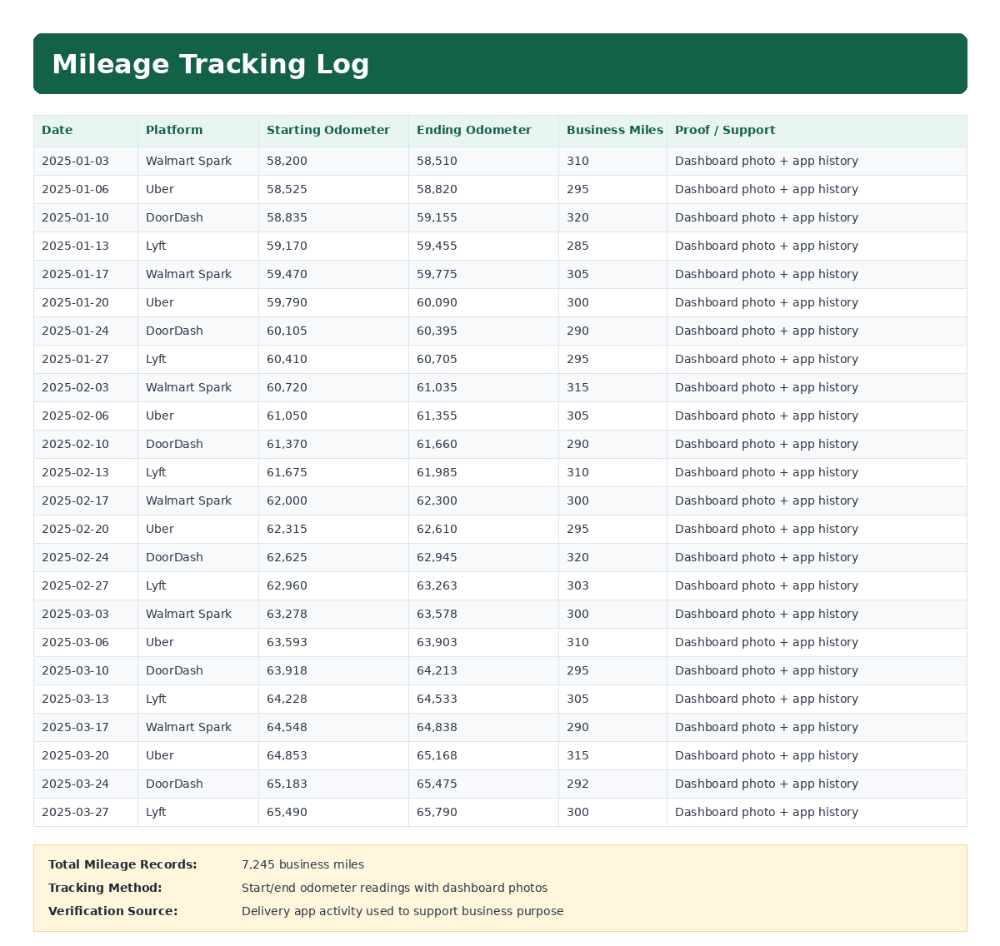

Purpose
Record business mileage by date and platform to support accurate mileage documentation.
Simple Example
A delivery route for Walmart Spark is recorded with 186 business miles.
Simple Bookkeeping Decision Rule
Mileage should be logged as close to the delivery date as possible. Each entry should include date, platform, start odometer, end odometer, miles, purpose, and proof such as dashboard photos or delivery app activity.
Screenshot: Mileage Tracking

Analysis
The mileage tracker records 7,245 business miles across 24 delivery workday entries. Mileage is tracked using start and ending odometer readings, with dashboard photos and delivery app history used as supporting proof.
Result
Business mileage is organized by date and platform, giving a clear record of delivery driving activity.